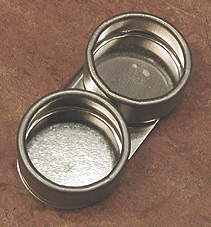
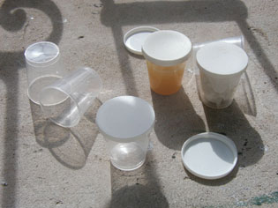

Les
palettes
La palette utilisée comme plaque à
broyer
La palette plate peut servir au "broyage", soit en fait
au "liage" (mélange liant
+ pigment - voir séparer ou non liants et
pigments). Le choix de la matière devient alors important car certains
pigments d'usage courant rayent les surfaces les plus dures, sans parler de
l'acier des spatules.
La plaque de porphyre, bien séparée de la palette et tout
à fait hors de prix, n'est pas forcément la meilleure solution. Un matériau
peu coûteux, à changer régulièrement, comme le mélaminé,
est en fait plus adapté aux pigments d'aujourd'hui, déjà broyés fin, que l'on
incorpore sans difficulté au liant avec un couteau à peindre.
1 - Palettes pour la
peinture acrylique et la peinture à l'huile
Palettes classiques
portables, bois ou papier
Ovales, rectangulaires, elles sont percées d'un trou où l'on glisse le
pouce pour les tenir d'une seule main.
* Composées de bois pur de couleur brune ou vernies, elles modifient l'aspect
chromatique des pâtes. En mélaminé
blanc, elles présentent une luminosité et une neutralité chromatique
supérieures. Elles sont aussi plus lisses, donc plus faciles à nettoyer,
sans être glissantes.
* Les transparentes (Plexiglas ®) posent le même problème que les palettes
de bois : elles ne sont pas neutres chromatiquement parlant. Votre jus
outremer deviendra marron sous l'influence des ocres subtil de votre
tomette, votre tapis, votre moquette, votre lino, votre parquet et aussi de
vos chaussures.
Porter sa palette à la main n'est possible que si vous travaillez une
matière très pâteuse, ne risquant pas de glisser et de se renverser, ce qui
ne manque jamais d'advenir avec des peintures un peu liquides. Dès lors, il
faut penser aux palettes que l'on pose quelque
part, bien à plat.
La palette de papier "sulfurisé" (disponible dans le commerce sous
la forme de blocs) présente un intérêt certain : elle boit modérément
l'huile sans que celle-ci transperce, avantage qui n'est pas sans intérêt pour
les utilisateurs de peintures en tubes.

Certains peintres nous ont fait part de leur désappointement concernant
l'emploi de palettes en papier pour l'acrylique
: l'eau est absorbée, la siccativation des pâtes est accélérée. Des enseignants proposent une solution apparemment efficace (sachant que tous les
papiers dits sulfurisés ne se comportent pas de la même manière et ne posent
pas forcément ce problème) : il s'agit de glisser un tissus humide sous la
feuille de papier-palette. Un professeur qui enseigne la peinture acrylique
aux Arts Appliqués et en Sorbonne nous a tout récemment confié que "le
résultat est stupéfiant !!!". Selon un biologiste, il pourrait être
encore amélioré par l'emploi d'un produit que nous sommes en train
d'identifier précisément. Enquête en cours.
Mentionnons enfin les accessoires pour palettes. Tous se fixent à l'aide
d'une pince incorporée. Voir photo ci-contre. La quantité de liquide que l'on
peut y verser peut paraître bien faible.
Palettes à poser
Trois catégories sont bien connues :
* la planche de mélaminé
blanc. Il est aisé de s'en procurer au coin d'un boulevard, d'une route,
sous la forme de pièces de meubles de cuisine ou d'étagères abandonnées.
Elle ne coûte donc vraiment pas cher, ce qui autorise des surfaces de
travail vraiment très confortables. A défaut elle peut être achetée
coupée à façon. Ses qualités chromatiques sont excellentes.
Elle autorise le mélange direct liants + pigments sur la palette, elle
résiste remarquablement à l'action de certains pigments ayant tendance à rayer
les surfaces au broyage (ocre jaune, oxyde
de fer jaune, jaune de mars, terre de Sienne naturelle), ce qui n'est pas le cas du verre ni du
Plexiglas ®.
* le miroir. On pourrait dire qu'il nécessite un
plafond blanc ! De plus, il se raye facilement. Chic mais coûteux et peu
pratique. Il est un peu trop lisse et il faut éventuellement le dépolir.
* le verre. Un peu compliqué à préparer. En
principe on doit d'abord peindre en blanc le verso (ou poser la plaque sur
un support déjà blanc). Puis, il faut éventuellement dépolir l'avers avec du carborundum
®.
* la palette de papier sulfurisé posée sur un
coin de table.
Sauf dans le dernier cas, les palettes posées peuvent parfaitement servir à
l'incorporation du pigment au liant (voir article Séparer
ou non liants et pigments). L'utilisation d'une molette et d'un récipient
en verre ou d'une plaque de marbre ne sont pas particulièrement à recommander
: d'une part certains pigments contenant des oxydes de fer et quelques autres
minéraux rayent les
supports, d'autre part les pigments achetés dans le commerce, même en qualité
"BTP", sont maintenant
pré-broyés très, très finement. N'hésitez donc pas à incorporer liants et
pigments sur une vaste palette en Formica ® qui vous coûtera
peu et que vous
pourrez rayer à volonté !
La palette pliable
C'est une denrée rare, presque introuvable. Elle permet théoriquement de
transporter et de stocker les pâtes même épaisses car elle ne se replie pas
totalement.
Son défaut : elle ne peut empêcher les pâtes liquides de couler ou de
goutter.
Conservation des pâtes sur toutes palettes
Le procédé consiste à confiner les pâtes à l'abri de l'air ambiant.
* Disposer une feuille d'aluminium alimentaire par-dessus la palette en veillant à ce que
les pâtes ne rentrent pas en contact avec elle. Ne pas hésiter à poser des
objets saillants de loin en loin entre les couleurs pour éviter ce contact par
surélévation de la feuille. Un agencement même grossier donne des
résultats appréciables.
* Une méthode encore plus efficace consiste à disposer par-dessus chaque plot
de couleur une assiette, une boîte, un verre en plastique retourné pour
l'isoler de l'air ambiant.

2
- Petits pots en plastique
Ce sont des outils précieux pour qui veut conserver un mélange, une pâte.
Voir photo ci-contre.
3 - Palettes pour
l'aquarelle, la gouache, les peintures sans
empâtement
Il s'agit de surfaces présentant des creusements susceptibles de retenir les
pâtes liquides.
Elles ne sont pas toutes pourvue d'un trou pour le pouce, ce qui veut dire
que certaines d'entre elles sont destinées à être posées et non tenues à la
main. C'est en fait le cas de la majorité d'entre elles.
Quelques particularités permettent de les distinguer :
* la substance de la palette
* plastique. Elle ne se brise pas aisément, elle est légère et donc
très facile à transporter.
* porcelaine. De coût plus élevé, elle est facile à nettoyer, lourde
(ce qui est un avantage pour qui travaille sur un coin de table),
résistante, et par conséquent cassante. Cette particularité ne
devrait pas la disqualifier pour autant : elle peut se conserver très,
très longtemps.
* la présence d'un couvercle destiné à une meilleure conservation.
Retour
début de page